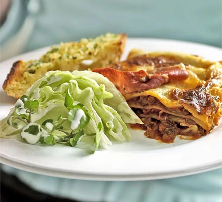

Lasagna

- 2 tbsp oil, plus a little for the dish
- 750g lean beef mince
- 90g pack prosciutto
- tomato sauce
- 200ml hot beef stock
- a little grated nutmeg
- 300g pack fresh lasagna sheets
- white sauce
- 125g ball mozzarella, torn into thin strips
-
Heat 2 tbsp of olive oil in a frying pan and cook 750g lean beef mince in two batches
for about 10 mins until browned all over
-
Finely chop 4 slices of prosciutto from a 90g pack, then stir through the meat mixture
-
Pour over 800g passata and 200ml hot beef stock. Add a little grated nutmeg, then season.
-
Bring up to the boil, then simmer for 30 mins until the sauce looks rich.
-
Heat oven to 180C/fan 160C/gas 4 and lightly oil an ovenproof dish (about 30 x 20cm).
-
Spoon one third of the meat sauce into the dish, then cover with some fresh lasagna sheets
from a 300g pack. Drizzle over roughly 130g ready-made or homemade white sauce.
-
Repeat until you have 3 layers of pasta. Cover with the remaining 390g white sauce, making
sure you can't see any pasta poking through.
-
Scatter 125g torn mozzarella over the top.
-
Arrange the rest of the prosciuttoon top. Bake for 45 mins until the top is bubbling and
lightly browned.